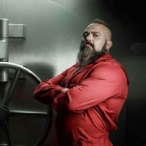

Profesor
Sergio Marquina
Profesor jest najważniejszą postacią - pomysłodawca i mózg całej operacji.
Dowodzi złodziejami ze swojej kryjówki, skonstruowanej przez Rio. Jest świetnym negocjatorem i nie zdradza swej osoby w rozmowach z inspektor Murillo. Jest perfekcjonistą i chce sam kontrolować każdą sytuację i je idealnie zaplanować. Brak kartoteki. Od dziewiętnastego roku życia nie odnowił dowodu osobistego. Na dobrą sprawę, to duch. Ale bardzo inteligentny.
Ekipa profesora
R io
Aníbal Cortés
Mozart informatyki. Koduje od szóstego roku życia, wie wszystko o alarmach i elektronice. Jeśli chodzi o całą resztę, jest kompletnie zielony. Rio jest jednym z wrażliwszych członków ekipy Profesora, to on był kozłem ofiarnym, którego policja zamierzała przekupić krótszą odsiadką, jednakże chłopak jest również twardy, co udowodnił, odmawiając Inspektor Murillo. Jest członkiem ekipy odpowiedzialnym za łamanie szyfrów i zabezpieczeń. Oprócz tego, że jest hakerem, to również najmłodszym z porywaczy. Pozostaje w związku z Tokio.
Cytat
“Nie mogłem kupić pierśćionka bo jesteśmy tu uwięzieni. Ale kiedy stąd wyjdę, zdobęde dla ciebie króla diamentów. Bedziesz wozić dłoń na pieprzonej taczce.”
tok i o
Sielene oliviera
Główna bohaterka i narratorka serialu Dom z papieru. Tokio jest członkiem drużyny zebranej przez Profesora, której celem było obrabowanie Mennicy Królewskiej w Hiszpanii. Po ucieczce z Hiszpanii i ukryciu Tokio razem z Profesorem zebrali ponownie siły, aby uwolnić Rio.
Cytat
“Podobnie jak w szachach, są chwile, kiedy aby wygrać, trzeba poświęcić figurę.”
“Jestem raczej uciekającym… ciałem i duszą. A jeśli nie mogę zabrać ciała, przynajmniej moja dusza ucieka.”
berl i n
Andres Fonollosa
Najważniejszy członek ekipy Profesora. To on dowodził ekipą napadu na Mennicę, podczas gdy Profesor nadzorował wszystko z kryjówki. Berlin jest bardzo spokojnym, lecz nierozważnym człowiekiem, pozbawionym wszelkich emocji. Jest również bardzo honorowy. Jak określiła go Tokio, jest jak rekin w basenie - można z nim pływać, lecz odczuwa się duży niepokój. Psycholog śledczy opisał go jako: "Narcystyczny egoista z manią wielkości. Całkowity brak empatii. Osobowość ekscentryczna z elementami megalomanii, przez co trudno mu odróżnić dobro od zła.
Cytat
“Żyj tak jakby każdy dzień był Twoim ostatnim.”
Na i robi
Ágata Jiménez
Podczas napadu na narodową mennicę Hiszpanii odpowiedzialna jest za produkcję i jakość pieniędzy. Jest ona niesamowicie wielką optymistką, która z łatwością nawiązuje relacje między ludzkie. W późniejszych odcinkach dowiadujemy się że miała syna. W przeszłości miała wyrok za handel i posiadanie narkotyków, co poskutkowało odebraniem jej syna. Zawsze wie co powiedzieć w danej chwili, jest urodzoną szefową co pokazuje podczas pierwszego napadu kiedy przejmuje dowodzenie.
Cytat
“Czy nikogo nie kochasz? Oczywiście, że nie, kochanie. Nie masz na to jaj. Aby kochać, potrzebujesz odwagi.”
M o skwa
augustin ramos
Był odpowiedzialny za dopilnowanie oraz wykopanie tunelu, który był drogą ucieczki porywaczy. Umiera podczas napadu w mennicy od potrójnego postrzału ze strony policji, gdy osłaniał wracająca do budynku Tokio. W serialu oprócz roli porywacza jest ojcem Denvera.
Cytat
“Jesli to się uda wyjedziemy do kraju którego nazwy nie potrafie nawet wymówć. Zaczniemy od początku.”
de n wer
daniel ramos
Narkotyki, połamane zęby i żebra. Gorąca krew. W idealnym skoku stanowi bombę zegarową. Na pierwszy rzut oka wygląda jak zwykły przestępca, król walk ulicznych. Dotknął wszystkich narkotyków. Pomimo swojego osobliwego śmiechu ma wielkie serce i zrobiłby wszystko dla tych, których kocha. Syn Moskwy.
Cytat
“Tokio to pieprzone Maserati i każdy chce Maserati. A jeśli weźmiesz Maserati, zostaw go na ulicy z otwartymi drzwiami i kluczami, musisz być bardzo popieprzony.”
hels i nki
Mirko dragic
Helsinki ma bardzo dobre relacje z Nairobi i lubi denerwować Arturo. Jego numer identyfikacyjny podczas jednego z aresztowań to 2137.Twierdzi, że został gejem bo na wojnie tak prośćiej. Chłopcy opiekuja sie sobą wzajemnie.
Cytat
“Musisz być wolny i odważny, bo uwierz mi, do miłości potrzeba więcej odwagi niż do wojny.”
“Arturito, Arturito! Odpocznij. Zajmę sie twoja raną. Zaraz wrócę.”
os l o
Radko Dragic
Żołnierze zawsze się przydadzą, a nie ma lepszych od Serbów. Możliwe, że myślą, ale nigdy się nie dowiemy.Brat bliźniak Helsinki. Bardzo malo mówi, prawie wcale, jedyne słowa wypowiada do swojego brata Helsinki w obcym języku. Zostaje zabity przez zakładników.